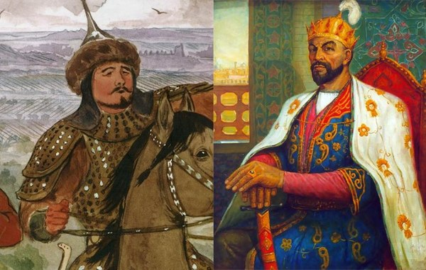

В прошлом выпуске Тохтамыш разорил Москву, многострадальную Рязань и другие города, после чего отбыл обратно в Орду. Дмитрий Донской, подсчитав ущерб, решил, что гордость обходится чересчур дорого и смирился, в обмен на великокняжеский ярлык отдав старшего сына в заложники.

Довольный хан успокоился, но ненадолго — неизжитые подростковые комплексы требовали самоутверждения. Однако врагов и возможных противников, над которыми можно было вволю покуражиться, у Тохтамыша не оставалось. С Русью все выяснено (на Рязань, правда, монголы еще пару раз сходили — карма у Олега была явно плохая), до Литвы — идти и идти, в Сибирь соваться лень... В общем, получалось, что в степях Тохтамыш самый главный и крутой. За исключением одного государства.
Непонятно, что именно ударило в голову хану и с какого перепоя он принял это судьбоносное для него решение, но в 1385 году Тохтамыш перешел Кавказ и разгромил Тебриз — город на северо-западе современного Ирана. Захапав кучу денег, рабов, и даже одного известного в то время поэта, главный ордынец отступил обратно в Сарай, гордый собой донельзя. В целом, небеспричинно — сам поход был достаточно сложен, и добычи монголы захватили много, не говоря уж о престиже и плюсам к пафосу. Но, как показали дальнейшие события, Тохтамышу стоило бы все же призадуматься, ужаснуться содеянному и начинать в панике рыть окопы полного профиля, а не балагурить в сарайских дворцах. Потому что Тебриз в те времена принадлежал Тамерлану.
Как уже писалось ранее, Тимур был мужиком крайне суровым, расчетливым и терпеливым. Поэтому, получив известия о такой из ряда вон выходящей наглости вчерашнего приемыша, Тамерлан не стал с воем грызть ковры или бегать по потолкам с саблей наголо, как сделали бы некоторые другие правители, а приказал подать подробные карты Золотой Орды и приступил к неторопливому планированию.
На севере, тем временем, жизнь шла своим чередом и иногда напоминала шпионский боевик. Княжич Василий Дмитриевич, войдя в более-менее разумный возраст, быстро осознал, что быть заложником в Сарае — обязанность почетная, но рискованная. Поэтому умудрился оттуда сбежать и подался в Молдавию — подальше от татар. Сразу возвращаться к отцу-батюшке явно не стоило, монголы могли и не оценить картину воссоединения, поэтому Василий добирался в Москву сильно кружным путем. Протусовав год в Молдавии и как следует распробовав местного вина, молдаванок и прочие статьи экспорта этой замечательной страны, княжич присоседился к митрополиту Киприану, как раз проходившему мимо из Константинополя, и доехал до Литовского княжества, где церковник общался с князем Витовтом про антиордынский союз, а сам Василий из дипломатических и гормональных соображений был обручен с дочерью князя, Софьей. Еще через два года литовских каникул до Васи дошла весть о кончине отца, Дмитрия Донского, после чего на московский престол вступил уже не какой-то там княжич, а полноправный великий князь Василий Первый. Ярлык на это дело у Тохтамыша справили, чтобы лишний раз не приходил.
Время шло, князья сменялись и лениво грызлись друг с другом, помер Олег Рязанский, успев набежать перед смертью на московскую Коломну, Тохтамыш, забыв особенности характера своего южного соседа, вовсю царствовал и развлекался, а Тамерлан флегматично чертил схемы наступления, проводил полномасштабные учения и попутно, чтобы не откладывать на потом, громил Моголистан на востоке.
И в конце мая 1391 года Тохтамыш понял, что с юга к нему пришел толстый полярный лис.
Как прошла встреча двух старых знакомых? Что стало с зарвавшимся монгольским ханом? Насколько суров был Тамерлан?
Это и многое другое вы узнаете в следующем выпуске.